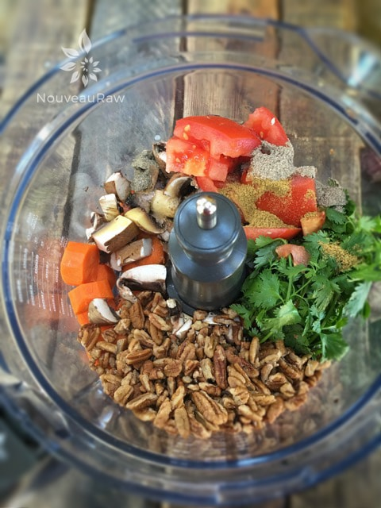
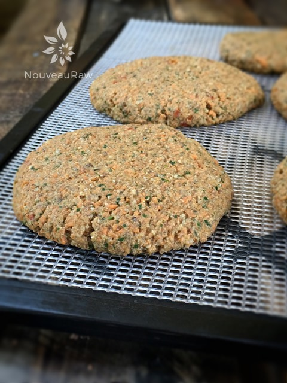
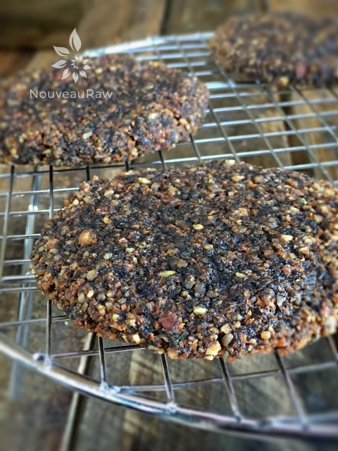
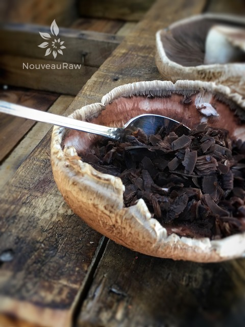
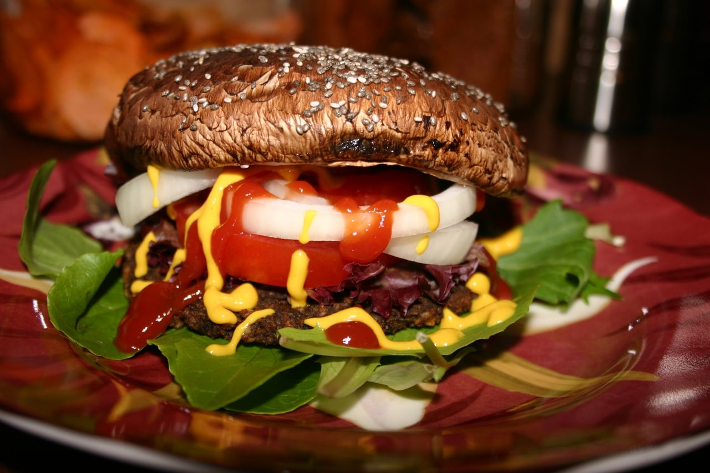

Veggie Burger
~ raw, vegan, gluten-free ~
I created this recipe in 2010, posted the recipe, and sort of lost track of it. As a recipe developer, that happens often because I am always off on the new and exciting recipes that are dancing in my head.
Bob likes to tease me after he takes the last bite of something I made. He says, “Well, that was delicious, just too bad it will be the last time I have it.” lol
Poor guy. He is sort of right… but there are times when I pull out my old recipes and make them again. This is one that needs to be remade often.
When I first made these veggie patties, I used large portobello mushrooms for the bun. This time (six years later) I used some raw buns that I had made a few days ago. So, I thought it was a good time to update the recipe photo.
You see… what I take pictures of is either our breakfast, lunch, dinner or a snack. I don’t make food just to make it for the site. I make it for us to enjoy (and hopefully you too). My goal is to not only nourish our taste buds but to also nourish our bodies with each bite we take.
Bob and I found this Veggie Burger rather tasty, well at least one would think so when we downed 2 burgers without inhaling, blinking, or talking. These patties are loaded with nutrients so therefore they will really fill you up. The patties are wonderful to make up ahead of time and then store in a sealed container in your fridge. Then when the urge hits you…have at it!
I built this burger with thinly sliced tomatoes, fresh sprouts, and my Lime Cilantro Guacamole. On the side, I prepared Smoked Paprika Avocado “Fries” dipped in Chipotle Lime Sauce. A full plate of flavor. I hope you enjoy this recipe. Blessings, amie sue
Bun:
Burger:
- 1 cup mushrooms
- 1 cup raw pecans, soaked
- a handful cilantro
- 1 1/2 cups diced carrots
- 1/2 cup sun-dried tomatoes
- 2 tsp olive oil
- 1 tsp ground cumin
- 1 tsp ground coriander
- 1/2 tsp Himalayan pink salt
- 1/2 tsp fresh ground chili peppers (optional)
- 1/4 tsp black pepper
Preparation:
Bun:
- Cut the stems from the mushrooms and gently scoop some of the center out so that the burger will fit between two mushrooms. I always scrape out the dark brown gills due to taste preference.
- Brush the inside and outside of the mushroom with the combined olive oil and coconut amino.
- Dehydrate at 115 degrees (F) on the mesh sheets for 3-6 hours.
- The longer they dry, the darker the buns get. Test the texture that you like, they obviously won’t have the texture of bread.
- Remove and build your burger.
- You can make the patties and the buns at the same time! These do not keep well so plan on using the buns right away.
Burger:
- After soaking the pecans, drain and discard the soak water.
- In the food processor, fitted with the “S” blade, combine the; pecans, mushrooms, cilantro, carrots, tomato, olive oil, cumin, coriander, salt, and pepper. Process to a paste-like texture.
- If need be add 1 tablespoon of water to get the mixture to the right texture.
- The mixture should be wet but hold its shape when formed into a patty.
- Create patties with either 1/4 or 1/2 cup of batter, shape, and place on the mesh trays that come with the dehydrator.
- Dehydrate at 145 degrees (F) for 1 hour, then reduce to 115 degrees (F) for 8+ hours or to your liking.
Culinary Explanations:
- Why do I start the dehydrator at 145 degrees (F)? Click (here) to learn the reason behind this.
- When working with fresh ingredients it is important to taste test as you build a recipe. Learn why (here).
- Don’t own a dehydrator? Learn how to use your oven (here). I do however truly believe that it is a worthwhile investment. Click (here) to learn what I use.

Place all the ingredients in a good process and process to a paste-like consistency.

Form the patties into any shape that you want. I use anywhere from 1/4 – 1/2 cup per patty. The picture above is of the patties as they are about to head into the dehydrator. The photo below is what they look like after drying. Amazing how they darken, isn’t it?


When making the “buns” with mushrooms, I like to remove the inner dark brown gills with a spoon. It’s not required just my preference due to taste. Coat with the marinade listed above and dehydrate. I failed to grab an after photo… Bob was too hungry!

This is the original burger that I made six years ago. You can see what the mushroom bun looks like.
© AmieSue.com